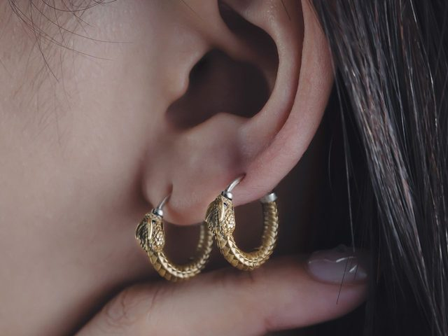
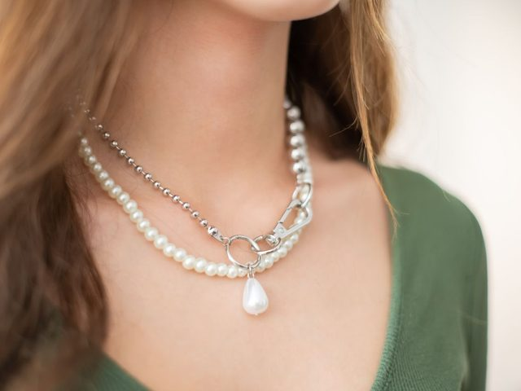
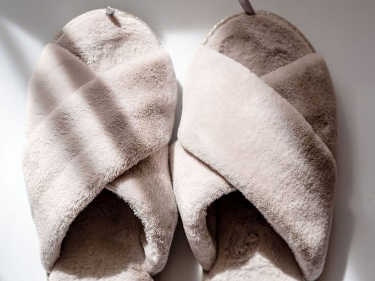
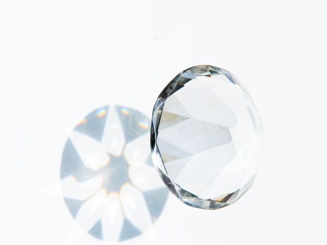
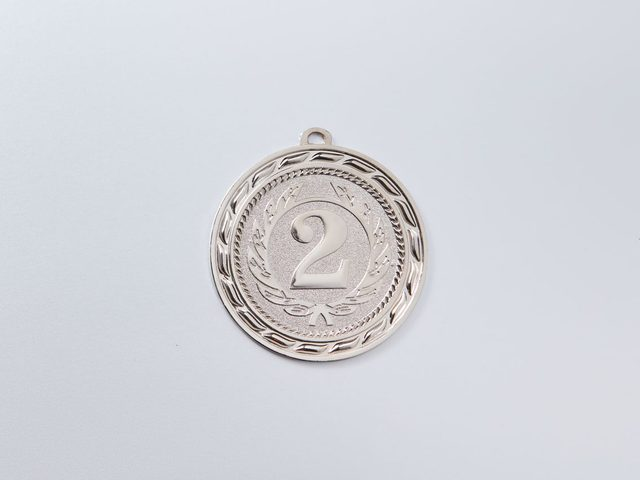

VOCABULARY · 主題 2000 字 PART 2 UNIT 12
Clothing & accessories．衣服和裝飾品
衣服、配件和材質，共 23 個。成雙成對的東西（trousers、slippers、sneakers、pajamas）要用 a pair of。
共 23 個單字．點 🔊 聽發音

1blousen.
女用襯衫
She wore a white blouse and a blue skirt.她穿白色襯衫配藍色裙子。

2pajamasn.
睡衣（褲）
一定用複數；a pair of pajamas
I put on my pajamas and went to bed.我換上睡衣去睡覺。
3raincoatn.
雨衣
rain + coat
Wear a raincoat when you ride a scooter in the rain.下雨騎機車要穿雨衣。

4suitn.
套裝；西裝
swimsuit 泳衣
Dad wears a suit and tie to work.爸爸穿西裝打領帶去上班。
5swimsuitn.
泳衣
swim + suit
Don't forget your swimsuit for the beach trip.去海邊別忘了帶泳衣。

6trousersn.
長褲
= pants；a pair of trousers
These trousers are too long for me.這條長褲對我來說太長了。
7underwearn.
內衣褲
不可數
Pack enough underwear for the five-day trip.五天的旅行要帶夠內衣褲。

8vestn.
背心
life vest 救生衣
Everyone on the boat must wear a life vest.船上每個人都要穿救生衣。

9contact lensn.
隱形眼鏡
複數 contact lenses
I wear contact lenses when I play basketball.我打籃球時戴隱形眼鏡。

10earringsn.
耳環
通常用複數（一對）
Mom got a pair of pearl earrings for her birthday.媽媽生日收到一對珍珠耳環。
11handkerchiefn.
手帕
d 不發音
Grandpa always carries a handkerchief in his pocket.爺爺口袋裡總是帶著手帕。

12necklacen.
項鍊
neck + lace
She wears a gold necklace.她戴著一條金項鍊。

13pursen.
錢包；（女用）手提包
wallet 是男用皮夾
Mom took some money out of her purse.媽媽從錢包裡拿出一些錢。

14scarfn.
圍巾；絲巾
複數 scarves
Wear a scarf. It's cold outside.戴條圍巾，外面很冷。

15slippersn.
拖鞋
a pair of slippers
Please put on slippers when you come in.進來時請換拖鞋。

16sneakersn.
運動鞋
a pair of sneakers
I need new sneakers for P.E. class.我體育課需要新的運動鞋。
17holen.
洞
a hole in my sock 襪子破洞
There is a hole in my sock.我的襪子破了一個洞。
18spotn.
斑點；汙漬；地點
a spot on my shirt 衣服上的汙點
There's a coffee spot on your shirt.你的襯衫上有一塊咖啡漬。

19cottonn.
棉；棉花
不可數；cotton candy 棉花糖
This T-shirt is made of cotton.這件 T 恤是棉做的。

20diamondn.
鑽石
diamond ring 鑽戒
Diamonds are very hard and expensive.鑽石又硬又貴。

21goldn.
金；黃金
不可數；golden 金色的
The winner got a medal made of gold.冠軍拿到一面金做的獎牌。

22silveradj. / n.
銀色的；銀
silver medal 銀牌
She won a silver medal in the race.她在比賽中得到銀牌。

23ironn. / v.
鐵；熨斗；燙衣服
iron 不可數；熨斗可數
Mom irons Dad's shirts every Sunday.媽媽每個星期天幫爸爸燙襯衫。
FOCUS
一雙、一條：a pair of
| 東西 | 說法 |
|---|---|
| 長褲 | a pair of trousers |
| 拖鞋 | a pair of slippers |
| 運動鞋 | a pair of sneakers |
| 睡衣 | a pair of pajamas |
| 耳環 | a pair of earrings |
兩件一組的東西用複數，數的時候說 a pair of、two pairs of。
FOCUS
金、銀、鐵
| 名詞 | 形容詞 |
|---|---|
| gold 金 | golden 金色的 |
| silver 銀 | silver 銀色的 |
| iron 鐵 | iron 鐵的 |
gold、silver、iron 當材料時不可數。